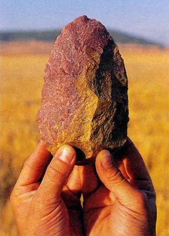

“HOMO ATAPUERCA”
Juan Luis Arsuaga
Ha logrado reputación mundial gracias a sus hallazgos en Atapuerca (Burgos), fundamentales para entender los primeros pasos del ser humano en Europa. El investigador muestra aquí las múltiples caras de su apasionante trabajo, desde la anécdota hasta lo filosófico.
Este paleoantropólogo de 49 años es la cara visible de lo que él mismo califica como uno de los más importantes yacimientos de fósiles del mundo. Es el rostro y en cierto modo el alma de Atapuerca, aunque comparte la dirección de la investigación junto a Eudald Carbonell y José María Bermúdez de Castro. El caso es que Arsuaga es un científico que sabe usar los medios de comunicación, que conoce la importancia que tienen para divulgar conocimientos y para conseguir financiación. Además es un brillante narrador de historias. Ha escrito sobre los hombres prehistóricos, su alimentación y la evolución humana; La especie elegida; El collar del neandertal y Los aborígenes son algunos de sus títulos. Es alto, delgado, desgarbado, con el cabello dispuesto en una aureola gris y rizada en torno a la cabeza, como un senador romano algo caprichoso. Le gusta que sus colaboradores le mimen; el día que se hizo esta entrevista, varios de ellos pasaron por su despacho para despedirse. Él bromea con todos. "¿Qué regalito me has traído hoy?", le dice a una bióloga que busca en su bolso, como si estuviera acostumbrada a esa pregunta, y que saca un par de caramelos. Sin embargo, esta faceta juguetona de su carácter, esa cualidad de jefe cercano y cálido, sin duda no impide que el científico Arsuaga sea tan exigente e implacable como necesita para lograr sus objetivos profesionales. De otro modo, el trabajo realizado en la sierra burgalesa tal vez no hubiera producido los tesoros que hoy han convertido Atapuerca en el más importante centro de estudio del origen del hombre europeo. Desde hace años, la carrera de Arsuaga, y de su equipo, está jalonada de fechas memorables.
Uno de esos días importantes tuvo lugar en enero de 2003, cuando el Museo Americano de Ciencias Naturales inauguró una exposición con piezas estelares de la colección de Atapuerca. Allí se mostró al mundo Excalibur la pequeña hacha de cuarzo hallada en la Sima de los Huesos entre un montón de huesos de hace 400.000 años. Esta joya de la corona es, se supone, un objeto usado en un ritual funerario por unos hombres prehistóricos que sabían lo que era la muerte y enterraban a sus parientes en la sima. Es decir, que tenían consciencia, que eran humanos. Otro de los días más felices de la carrera profesional de Arsuaga tuvo lugar en 1992, cuando encontró en el yacimiento burgalés los tres primeros cráneos de hombres neandertales. 0 el día que la revista Nature lo publicó en portada. Pero este profesor e investigador ha tenido, desde comienzos de los años noventa, una existencia llena de éxitos profesionales y de fechas que lo celebraban. Cuando recogió el Príncipe de Asturias, concedido a él y a su equipo, o cuando la Academia de Ciencias de EE UU lo incluyó como uno de sus miembros, o el día que encontró la cadera Elvis... Y los días felices todavía no han terminado.
Me dijo el otro día por teléfono que tenía una mentalidad de 15 años. ¿Qué significa eso para usted?
Hace poco, una amiga psicóloga me dijo que ese niño que todos llevamos dentro es el ser básico. Quiere decir que a los siete años tienes todavía la capacidad de asombro, y que yo no la he perdido. Y la capacidad de divertirte, y ese espíritu travieso. Y la capacidad de ensoñación, de imaginarse cosas. Y sobre todo la pretensión absurda, que la vida te hace ir descartando, de que en principio todo es posible. Y bueno, ¿por qué no? A veces pienso que nosotros, los que hacemos este trabajo, tenemos una vida mágica. Yo hago un trabajo de científico normal, pero me dejo llevar por la fascinación que aún me produce lo misterioso, lo oscuro. Tengo el ánimo explorador. Hay una teoría muy respetable que dice que los humanos somos una especie que no ha completado su desarrollo; que somos una especie de bebés gigantes, para entendernos. Porque tenemos, se dice, rasgos físicos infantiles y mantenemos esa capacidad inquisitiva de explorador, y la capacidad de juego, que es propia de las crías de los mamíferos. Luego ya no juegan, porque el juego es una preparación para la vida, y con el juego aprenden a sobrevivir.
¿Cree que esa capacidad de ensoñación, de pensar que todo es posible, etcétera, son características infantiles que los científicos conservan de un modo especial?
Lo conservan los humanos durante toda su vida, pero sobre todo los científicos. De algún modo, me parece que ésa es la naturaleza del científico; lo he confirmado cuando les he conocido. Son personas poco prácticas: la vida práctica y la letra pequeña de los contratos no les interesa nada. En la Academia de Ciencias de Estados Unidos, de la que soy miembro, y donde me encontré con varios premios Nóbel, descubrí hasta qué punto es verdad que los sabios son despistados. Sucedió cuando el director empezó a dar unas explicaciones a los reunidos. "Tenemos que salir para coger un autobús", dijo, "un autobús que está en la entrada del edificio. Un autobús azul, no blanco o rojo; sólo azul. Y vamos a salir ahora mismo. Vamos a salir por esa puerta y vamos a dirigirnos a la entrada, donde está ese autobús que nos llevará a otro edificio. Como digo, el autobús es de color azul". Total, que antes de subir en el autobús azul no sé cuántos se habían perdido por los jardines. Y otra cosa que permanece viva en los científicos es el espíritu de aventura. Si a mí me dicen que vaya a montar en globo, voy corriendo, porque la vida es muy corta. He estado en sitios increíbles, he vivido lo que se entiende normalmente por aventuras peligrosas; he estado, por-ejemplo, con gente que no ha visto nunca a un blanco. He sido un auténtico explorador. Aunque mi mensaje para la gente corriente es que esas vivencias no son muy diferentes de las que siento en Gredos o cuando busco setas por el campo.
¿Cómo relaciona ese espíritu con el hecho de que, según dice usted, los grandes hallazgos científicos, o las teorías, no se descubren, sino que se inventan?
Sí, la creatividad científica reside en el mismo lugar del cerebro de donde proceden la poesía y los cuentos. Y si yo empiezo a explicarte que en un tiempo muy lejano había en la Tierra unos hombres que se llamaban cromañones y que vivían en la estepa, donde la existencia era difícil, y que de pronto empezó a hacer mucho frío en la Península, pues no creo que sea un relato muy diferente al de Caperucita Roja. Y luego está la parte analítica, claro; pero la estructura narrativa de la ciencia es un cuento que nos narra el mundo en el que vivimos.
Pertenecer a la Academia de ciencias es un honor poco frecuente. ¿Se ha sentido mejor tratado fuera que dentro de su país?
Cuando en 1992 descubrimos los tres cráneos en la Sima de los Huesos, y el trabajo nos lo publicaron en la portada de la revista Nature, yo no era nadie. Es un caso que ilustra bastante bien cómo funciona el mundo de la ciencia; a mi modo de ver, el más limpio de los que he conocido. Porque yo no era nadie, nadie me conocía, simplemente mandé el trabajo y lo admitieron. Y el año pasado, la misma revista publicó los que eran los 10 descubrimientos más importantes de la historia de la evolución humana, y nueve eran africanos; sólo el nuestro no lo era, el único. En 1994 encontramos al Homo antecessor y en 1997 nos dieron el Príncipe de Asturias y nuestro trabajo fue conocido por la sociedad española. Somos uno de los yacimientos más importantes que existen. Bueno, pues a raíz de publicar en Nature, y en portada, yo pensaba, en mi ingenuidad, que íbamos a poder hacer lo que fuera. Que alguien nos llamaría, pero casi nadie nos dijo nada.
En alguno de sus libros cita a Julio Verne y a Kipling. ¿Fue, de niño, lector de esos autores y tal vez alimentaron su posterior vocación?
Kipling escribió bastantes libros que tienen que ver con lo nuestro. Uno es El libro de la selva, inevitablemente, y otro, un libro de historias sobre animales donde cuenta, por ejemplo, cómo consiguió el tigre sus rayas. Si cito a Julio Verne es porque es reconocible para los lectores y porque uno de sus libros trata de la búsqueda del eslabón perdido. Su mejor obra es, en mi opinión, Miguel Strogoff y hablo de él al contar la aventura que se llevó a cabo para buscar un mamut fósil, que está en San Petersburgo. Se podría reconstruir toda esa peripecia, en la que incluso hubo muertos. Fue una de esas historias heroicas de la ciencia, de cuando todavía cabía el heroísmo, ese elemento romántico que echamos de menos los que pasamos más tiempo del que nos gustaría encerrados en un despacho. A los que estamos encerrados entre cuatro paredes nos pasa como a los niños: se les encierra para educarlos, pero siempre quieren escapar, salir al monte.
¿Se siente retenido entre cuatro paredes?
Para algunos, el despacho es su hábitat natural; pero yo donde me encuentro a gusto, tengo una sensación de paz y puedo relativizar los problemas es en el campo. Aquí, los problemas se me hacen gigantes, y sí, es verdad que hay muchos problemas, pero es que los hago enormes por ejemplo, cuando nos conceden una subvención en septiembre, medio año después de haberla solicitado, y tenemos que justificar los gastos en octubre, con lo que, de pronto, en diez días tienes que gastártelo todo y presentar las facturas.. . En el campo relativizo todo eso. Todos sentimos esa llamada, necesitamos el campo de algún modo.
¿A pesar de su capacidad para la ensoñación y de creer que todo es posible, hasta cierto punto, pudo imaginar que en su trabajo se toparía con algo parecido a la Sima de los Huesos?
Digamos que, respecto a la Sima de los Huesos, yo me siento como un niño que encontró un tesoro, pero nunca imaginé algo semejante, He hecho muchas excavaciones en las que no encontré nada importante. Jugar al póquer está bien; pero si ganas, entonces es mejor. La Sima de los Huesos es el yacimiento más importante del mundo. Y Excalibur es increíble. [Excalibur es una pequeña herramienta cortante, de cuarzo rojizo, encontrada en la Sima de los Huesos. Un elemento ritual, según Arsuaga y su equipo, que prueba que ese lugar era un cementerio, y que, por tanto, los hombres que vivían allí tenían conciencia de la muerte].
En la sima encuentran la muestra más primitiva de un enterramiento humano. ¿El mero amontonamiento de cadáveres fósiles es suficiente para deducir tal cosa?
Sí, porque hay otras explicaciones complicadas, pero que sea un enterramiento es la más fácil, y en ciencia siempre hay que buscar la explicación más simple; ésa es como una guía de trabajo.
Pero no eran cadáveres ordenados, siguiendo un ritual, digamos.
No, es como si fuera un osario. Un montón de cadáveres, un caos de esqueletos. Pero desde que existe esta disciplina, nunca se ha encontrado una cosa igual. Esa gente vivió hace 400.000 años, en un momento histórico en que nosotros pensábamos que podía haber surgido la consciencia.
¿Y los fósiles de la sima son la prueba que confirma la teoría de la aparición de la consciencia?
Eso es. Si estamos ante el comportamiento de un ser simbólico, que es lo que creemos, sería una prueba definitiva. Pero ya lo habíamos ido viendo antes; en la evolución tecnológica, donde se alcanzan cotas importantes; estudiando la biología social y cómo se organizaban, con lo que llegamos a la conclusión de que tenían un modelo organizativo y social moderno. Y luego está el cerebro, con una capacidad y una morfología que los acerca a nosotros. Y el hecho de que tuvieran una infancia prolongada, lo que implica un aprendizaje más largo: simplemente porque tenían más cosas que aprender. Todo se había vuelto más complejo. Por varios caminos, nosotros veíamos confluir una serie de complejidades que nos hacían pensar que en ese momento se podía producir una chispa. Y de pronto encontramos la sima.
¿Se puede decir que es ahí, y en ese momento, cuando aparece el hombre?
Todo parece indicar que se produce ese despegue, eso que nos hace humanos. Los anteriores eran homínidos.
Ha hablado de que se produce una chispa. ¿Un cambio repentino es algo parecido a una mutación?
Hay dos modelos de discusión sobre eso. Ésa es una gran controversia científica, la última gran controversia científica. Hemos ido reconstruyendo fósiles y ahora conocemos de manera precisa lo que es la genealogía humana, la geometría de la evolución. Esto es ya muy estable, digamos que no va a cambiar mucho. Esa chispa se trataría de la aparición súbita y brusca de una propiedad emergente, porque la mente es un sistema muy complejo, y los sistemas muy complejos producen a veces resultados inesperados que se llaman propiedades emergentes. Los sistemas simples sólo pueden evolucionar por acumulación de propiedades, pero el cerebro, la biosfera, el clima son sistemas en los que un pequeño cambio produce un efecto inesperado; es el efecto mariposa. Pero yo creo que en la mente humana hay otros ejemplares, que son los neandertales, que fueron nuestros contemporáneos y desaparecieron de pronto. Si uno piensa que la evolución de la mente es un proceso gradual, puede aceptar que los neandertales tuvieron una mente y un lenguaje. Pero para los que piensan que la mente humana es una propiedad emergente de este sistema tan complejo que es el cerebro, y que aparece en un momento determinado, para ésos, los neandertales no tendrían mente humana y serían como superchimpancés.
Pero, en realidad, no parece una locura la teoría de la propiedad emergente, o del mutante, cuando son tan pocos los genes que diferencian al humano del chimpancé, creo que menos de un 1%.
Claro, y es concebible que en un momento dado se produzcan nuevas conexiones neuronales en un cerebro y aparezcan propiedades nuevas. Pero ése no es mi modelo.
El suyo es el de una lenta evolución.
Es decir, que ha habido otros humanos en la historia de la vida. Pero, como digo, esto es un debate. Bueno, hay una historia de que la Iglesia, o las Iglesias, se ha resistido a admitir el origen evolutivo humano. Algunos pensadores han tenido que admitir que procedemos de animales, de especies extinguidas que eran como los monos. Es más, todavía estamos clasificados con ellos, como primates. Claro, la evolución del cuerpo nadie puede discutirla; entonces, lo que dicen es que el cuerpo ha evolucionado, pero que el alma, no. El alma fue creada por Dios. Pero ¿qué se entiende por alma? Nosotros de lo que nos ocupamos es de nuestras facultades mentales, y decimos que esto tiene un origen evolutivo, con eslabones perdidos y etapas intermedias. Entonces, eso que aparece sólo en nuestra especie deja una puerta abierta a la idea de que se trata de un acto sobrenatural. Yo no soy más que un pobre científico, no me meto; pero sí digo que ese conjunto de propiedades del cerebro es lo que suele etiquetarse como mente humana, y que consiste en nuestra capacidad de imaginar el futuro, de construirlo, de tener la visión de proyectarnos en el tiempo y de planificarlo en función de lo que queremos que suceda. Y que eso es exclusivamente humano. Hay animales que están programados para hacer migraciones, pero la capacidad de construirse un futuro es sólo humana. Y otra característica humana es la consciencia; sabemos que existimos y que existen los demás, y que tenemos mente y que los demás la tienen, y por eso intentamos saber lo que los otros están pensando. Eso se llama tener una teoría de la mente. La vida es una gran partida de mus.
La importancia del yacimiento de la sima es que demuestra la capacidad de comunicarse y crear símbolos de los hombres que la usaron como enterramiento. Pero, en una teoría de esta naturaleza, ¿es difícil para un profano llegar a distinguir cuánto hay de hechos que pueden probarse y cuánto de especulación y deducciones?
Tenemos la tecnología y tenemos un lenguaje; es decir, construimos símbolos y los manipulamos, y nos comunicamos a través de ellos. A esto, así como a nuestra capacidad de reprimir nuestros actos -por ejemplo, el hecho de pescar un pez; pero en vez de comérselo, conservarlo en sal, para más tarde- o a la capacidad de soñar, a todo eso junto se le llama mente. Y la cuestión es saber cuándo aparece y cómo aparece. Nosotros pensamos que eso es una evolución, en la cual el Homo sapiens ha avanzado, por ejemplo, más que el neandertal, el cual tenía estas mismas facultades. pero carecía de imaginación.
¿Y eso, por ejemplo, cómo lo saben?
Porque el Homo sapiens ha llegado más lejos que ninguna otra especie en la capacidad simbólica, hemos llegado a ser hipersimbólicos. Y esto es muy importante. Somos capaces de construir identidades que están basadas en símbolos compartidos, en mitos compartidos. Y eso es una novedad en biología, porque los animales que forman grupos basan esa facultad en el parentesco, mientras que hay una especie que es capaz de aliarse contra sus propios hermanos, creando identidades que en parte son genéticas y que están basadas en que compartimos creencias. Y creando grupos que lo que tienen en común son los mitos compartidos y sus símbolos. Es decir, los símbolos son suficientes para unirnos, y, exagerando, también es lo que nos hace manipulables; tan símbolo es la Cruz Roja como la otra cruz, o la Media Luna. Entonces, nuestra capacidad para identificarnos con algo que nos trasciende y nos une, con un grupo más amplio, o que no desaparece, que se perpetúa a través de mitos y de ideas, y de símbolos, te lleva a pensar que a nosotros nos pasa lo mismo que a los humanos en la mitología griega: que somos usados, como ellos por los dioses, en una especie de guerra de símbolos que tienen mucha fuerza -como las patrias, las religiones-, y para los que somos carne de cañón. Es una exageración, pero la fuerza de los símbolos es muy real; a veces las ideas desaparecen y sólo quedan los símbolos.
¿Y esto qué tiene que ver con la falta de imaginación del neandertal?
Hemos visto que en la tecnología del cromañón, a diferencia de la de los neandertales, más allá de la mera funcionalidad, aparecen cosas con un valor añadido, de diseño: cosas que sólo sirven para la identificación y nada más, algo que permite que su poseedor sea reconocido. Es lo mismo que vemos en las películas del Oeste, donde las plumas de una flecha india son suficientes para que se identifique a una tribu, lo que no tiene nada que ver con la funcionalidad de la flecha. Y esa capacidad hipersimbólica es lo que hace que aparezca el arte, desconocido en otras especies. Y es lo que hace que los humanos, y no otros, dupliquen el mundo; es decir, que un árbol sea un árbol y además el árbol. Por ejemplo, el árbol de Guernica.
¿Quiere decir que el hecho de que los neandertales no duplicaran el mundo fue lo que acabó con ellos y los hizo desaparecer de la faz de la Tierra?
En el momento en que el bosque desaparece, en una crisis climática de mucho frío, el cromañón ya podía imaginarse que determinada roca era esa roca donde se posó el águila que significa tal cosa. Y eso es importante en un mundo muy hostil para todos. Ahí es donde está la capacidad humana de compartir identidades, porque si tienes que andar tres días por la estepa en busca de comida, y de pronto te encuentras un grupo que lleva una pluma como la tuya, pues la verdad es que eso consuela mucho. Y otra cosa fundamental es que el cromañón tenía en la cabeza varias cosas al mismo tiempo, y cuanto más grande es la memoria de trabajo de la mente, que es como una pizarra, más cosas caben en ella. Y esas pizarras grandes permiten, por ejemplo, construir el subjuntivo, que es algo que tiene mucha miga; si no lloviera, yo saldría a la calle, o si el reno pasara por aquí, yo podría cazarlo.
¿La evolución del cerebro es la parte de la evolución que más le interesa?
El cerebro es la última frontera, pero a mí me interesa todo. Yo estudié la evolución de la cadera, que es todo un mundo. De hecho, una cadera vale más que un cráneo, porque sólo hay una completa: la nuestra, a la que llamamos Elvis.
En los años setenta se creía que la mente de los chimpancés tenía una gran capacidad para aprender. Luego se vio que sólo eran capaces de aprender lo que un niño de dos años. ¿Qué supuso para los científicos esa decepción, y qué significa esa limitación, en términos de evolución?
Yo recuerdo las grandes esperanzas que se pusieron en esa cuestión. Cuando se empezó a enseñarles el lenguaje de los sordomudos, se pensó que íbamos a comunicarnos con ellos. Por ejemplo, cuando algunos jóvenes me dicen ahora que está muy bien el trabajo con los chimpancés, yo, que recuerdo las expectativas que se tuvieron, les digo: "¡Pero es que tú no sabes lo que se esperaba!". Y eso significa que el chimpancé está en el umbral, que están como estábamos nosotros hace quizá dos o tres millones de años.
En este momento entra en el despacho Ignacio Martínez, coautor con Arsuaga de La especie elegida. Y Arsuaga le pregunta: "Nacho, ¿qué libro estamos escribiendo ahora?". Nacho dice algo que no se entiende, y luego añade riendo: "¿Sabes? Es que yo soy el negro de Arsuaga, y yo mismo también tengo varios negros más que escriben para mí”. Sale así al paso de las malas lenguas que dicen que a Arsuaga le escriben los libros sus colaboradores.
Sabe bien lo que hay que hacer para divulgar la ciencia. A la cadera de Atapuerca la llama 'Elvís, 'Excalibur' es la herramienta bifaz de cuarzo rojizo hallada en la sima. Nombres que remiten al subconsciente.
Sí. Excalibur se llama así para que a la gente le recuerde al Rey Arturo y encienda algo en el cerebro. Y hay una teoría científica muy respetable que se llama East Side history, para indicar el origen de los fósiles que proceden de África oriental, mientras que Out of Africa, como la novela y la película, se denomina la teoría de los humanos que salieron de África. Copiamos los referentes culturales. Siempre estamos pretendiendo encender la bombilla y dar una explicación alternativa a la mítica. La ciencia, con frecuencia, es antiintuitiva. La lógica te dice que el Sol es el que se mueve, en vez de la Tierra, por ejemplo. Y así es todo. En una conferencia, un científico dijo que, según la física cuántica, una partícula puede estar en dos sitios a la vez. Un filósofo le rebatió diciendo que no era lógico. Yo intervine para decir que nuestra lógica es producto de la evolución y está adaptada a lo que nos conviene, a la visión del mundo que nos interesa conocer para sobrevivir. Por eso, cuando investigamos algo con el método científico, nos encontramos con enormes paradojas para nuestro sentido común. Por ejemplo, cuando la gente se preguntó cómo se formaba el embrión, dedujeron que dentro del cigoto había un hombrecito, porque eso era lo lógico. Y no es así, qué le vamos a hacer, porque lo del hombrecito estaba bien pensado. A menudo ser científico es pensar lo contrario a lo que dicta tu sentido común.
Uno de sus libros trata sobre la relación entre la evolución del cerebro y la alimentación. Cuando el hombre comió carne, el cerebro creció. Dice también que el cerebro crece a expensas del estómago, que se fue haciendo más y más pequeño. Yo me pregunto: si viviéramos en una evolución perpetua, ¿podría suceder que los supergordos cuyo estómago ha crecido corrieran el riesgo de estar disminuyendo el tamaño de su cerebro?
No, la evolución no funciona así. El mecanismo que la regula es la selección natural, y eso quiere decir que no todo lo que tú aprendes se transmite a tus hijos. Las modificaciones físicas no se heredan. Podemos comer hasta hincharnos. El hombre está cerrado genéticamente. Ahora mismo, la especie humana no está evolucionando; digamos que hay una microevolución, a pequeño nivel. Nosotros somos quienes nos ocupamos de que no haya evolución, afortunadamente, porque nos ocupamos de que no haya selección natural. La única forma de que haya evolución es que la muerte esté por medio. La muerte es la responsable, y, sin embargo, es algo bello. Esa belleza de las gacelas, la rapidez de los guepardos, eso lo ha hecho la muerte, es ella la creadora de tanta belleza. Para que haya mucha belleza tiene que haber mucha muerte. Y nosotros no queremos que la haya. Hay una selección natural, pequeña; por ejemplo, con los virus. Ahora bien, si hubiera una catástrofe humanitaria y volviéramos a la edad de piedra habría que espabilar.
Hablando del misterio de la materia oscura del universo, un astrofísico comentó que el cerebro humano todavía no estaba preparado para entender ese misterio...
El conocimiento es acumulativo. Nosotros sabemos mucho más que el hombre de cromañón porque hemos ido acumulando conocimientos. Sabemos más por eso, no porque el cerebro se haya hecho más y más inteligente.
Usted dice que el cerebro es la última frontera que le queda a la ciencia que investiga la evolución humana. ¿Cuáles son los otros retos?
Quedan muchos. A los primeros homínidos por ejemplo, los conocemos muy mal . Tampoco conocemos el origen de la postura bípeda; sabemos donde aparecen los primeros bípedos, pero nada más. Y tenemos una enorme laguna de fósiles que va desde los 800.000 años hasta los 400.000. En medio de esas dos etapas no sabemos nada, no hay fósiles para estudiar.
¿Es lógico pensar que si la vida ha surgido en la Tierra lo haya hecho en otros planetas, o incluso que esa vida viajara hasta la Tierra procedente de otro lugar del espacio?
No me lo creo, la vida se ha originado aquí.
¿Por qué no? Constantemente se hacen nuevos descubrimientos...
Es que es muy complicada la vida. Porque todos los seres vivientes actuales descendemos de un ancestro común. Es decir, aparentemente, la vida sólo se ha originado una vez. Podía haberlo hecho setenta veces, podía estar haciéndolo ahora mismo, pero no. No está surgiendo la vida, no surgen formas diferentes a las que conocemos. La vida aparece hace 3.500 millones de años, y desde entonces, si ha aparecido otra clase de vida, no ha dejado rastro. No es nada fácil.
¿Por qué le gusta este trabajo?
Al presidente de la Academia de Ciencias de Estados Unidos le oí una frase que dijo Albert Einstein, y que me parece adecuada para responder a esto: "Mucha gente cree que ser un gran científico es una cuestión de talento; pero eso no tiene nada que ver, es una cuestión de temperamento". Además, aquí tenemos como lema una frase de un paleontólogo al que admiramos, y que dice que los antropólogos no somos unos científicos que estudian unos seres que murieron hace mucho tiempo, sino que estudiamos unos seres que vivieron hace mucho tiempo.
Además de ser científico de renombre universal y un gran divulgador, la otra listeza que se le atribuye es la de ser un genio para formar equipos.
Y te voy a decir por qué. Precisamente porque no tengo complejos. Cuando veo a un tipo muy listo le digo: "Oye, vente para acá". Porque no creo que vaya a hacer sombra. Cuanto más listos, mejor. Sí, tengo ese talento de descubrir a la gente lista, y por eso creo que este centro será el mejor del mundo: en evolución humana, en estudio del ADN antiguo y en paleontología. Tenemos la pretensión de ser los mejores. Igual que tenemos ese deseo de divulgar la ciencia. Porque es divertido, y además porque es una obligación moral: yo nunca me olvido de que mi sueldo lo paga un señor que está faenando en el Gran Sol o trabajando de albañil. No me pagan para que me divierta, algo tendré que dar a cambio. Es lo que aprendí en Estados Unidos: fui y vi como lo hacen ellos. Allí la ciencia tiene que tener imagen pública La gente tiene que conocerla .
¿De dónde es usted? No sé si alguien que estudia la evolución humana se siente de algún sitio.
Soy una cosa rara. No sé de dónde soy. Nací en Madrid, pero me quedé aquí 20 días. Mi padre jugaba en el Real Madrid, se casó con una madrileña y yo nací en su último año en el equipo. Luego se fue a jugar al Racing de Santander, y nosotros con él. Pero enseguida marchamos a Bilbao, y allí viví hasta que vine a la universidad. La familia de mi padre es de un pueblo de Guipúzcoa, de donde proceden mis vivencias infantiles.. Pero, al mismo tiempo, es extraño, me siento como si tuviera dos vidas. Ahora voy allí, y resulta que entiendo algo el vascuence. Y yo mismo me sorprendo porque mi familia es vascohablante, pero es como si me hablaran en egipcio antiguo: Pero aquél es mi hábitat, mi tribu. Tengo una idea de los vascos un poco más centrada, porque los conozco desde dentro y desde fuera. Me pasa, por ejemplo, que cuando trato con alguien de la Administración, si ese funcionario es vasco me alegro; es vasco, entonces es que no me puede fallar.
Tenemos dos bombas, pero no podemos decir nada por el momento. La cuestión es que hemos mirado en una dirección en la que todo el mundo había mirado antes que nosotros, pero no había visto nada. A nadie se le había ocurrido... Pero nosotros sí hemos visto. Si nuestro descubrimiento es aceptado será de una enorme trascendencia. [Ignacio Martínez añade: "Le hemos hecho una radiografía al alma" J.
Usted ha conseguido muchas cosas. Debe de ser un hombre satisfecho de su vida.
Sí,
la verdad. Digo lo mismo que Garcilaso, que es mi ídolo y que tiene un verso
derrotista en el que se pregunta: “¿Y qué se saca de aquesto; alguna gloria,
algún premio o reconocimiento?". Y se contesta: "Véase allí que como
polvo al viento se desharán vuestras fatigas". Bien, yo espero que no sea
así. A él no le pasó, y ahí están sus poemas...

“Excalibur”. He aquí la “joya de la corona” de Atapuerca : la pequeña hacha de cuarzo usada hace ya 400.00 años en ritos funerarios.

LA SIMA DE LOS HUESOS. Arsuaga (el primero por la derecha), con parte de su equipo en la Sima de los Huesos, en Atapuerca (Burgos).
El País semanal.- Número 1401 Domingo 3 de agosto de 2003